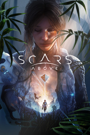

Scars Above
Detalles
|  | |
| Tiempo de juego | No Jugado |
| Última actividad | Nunca |
| Añadido | 11/6/2024 15:27:56 |
| Modificado | 11/17/2024 14:37:09 |
| Estado de finalización | No Jugado |
| Librería | Playnite |
| Fuente | 1 TB 1 |
| Plataforma | PC (Windows) |
| Fecha de lanzamiento | 2/28/2023 |
| Puntuación de la Comunidad | 75 |
| Puntuación de la Crítica | |
| Puntuación de usuario | |
| Género | Acción Aventura |
| Desarrollador | Mad Head Games |
| Editor | Prime Matter |
| Característica | Cloud Saves Compat. Total Con Mando Logros De Préstamo Familiar Un Jugador |
| Enlaces | Punto de encuentro Discusiones Guías Noticias Página de la tienda PCGamingWiki Logros |
| Tag | 3D Acción Acción y aventura Aventura Ciencia ficción Difíciles Disparos Disparos en tercera persona Espacio Exploración Extraterrestres Misterio Mundo abierto Protagonista femenina Tercera persona Terror Tipo «Dark Souls» Un jugador |
Descripción
Scars Above es un shooter de acción y aventuras en tercera persona con temática de ciencia ficción que pondrá tus habilidades a prueba. El juego mezcla la satisfacción de superar dificultades con una historia cautivadora y compleja que se desenvuelve en un misterioso mundo alienígena por explorar.
Hay cosas que no deberían ser descubiertas...
Una estructura alienígena gigantesca y enigmática, que la humanidad ha bautizado como «metahedro», aparece en la órbita de la Tierra y deja sin palabras al mundo entero. El equipo de respuesta y evaluación frente a contactos conscientes (SCAR), formado por científicos e ingenieros, tiene la misión de investigar dicha estructura.
Sin embargo, las cosas no salen como estaba previsto y el metahedro traslada al equipo por el espacio hasta un planeta misterioso lejos del Sol. Ponte en la piel de la doctora Kate Ward, una miembro de SCAR, que despierta aturdida y sola en un entorno desconocido y hostil. Decidida a sobrevivir, es hora de aventurarse para encontrar a su tripulación y descubrir el misterio de lo que ha sucedido.
Tendrás que utilizar una combinación de armas a distancia, dispositivos, consumibles y ataques cuerpo a cuerpo, además de gestionar la resistencia mientras corres, esquivas, aprovechas puntos débiles y descubres tácticas efectivas para derrotar a los enemigos.
Combina ataques elementales diferentes para superar las expectativas y atraviesa obstáculos que de lo contrario serían infranqueables.
Fabrica objetos y artefactos distintos que te ayuden contra las incontables amenazas de este exoplaneta.

Explora un mundo alienígena lleno de incontables amenazas, parajes magníficos y ruinas que dan indicios de una civilización antigua y avanzada que desapareció misteriosamente.
Viaja por biomas diferentes, como marismas, páramos congelados, cavernas subterráneas e instalaciones alienígenas, con sus propios desafíos, enemigos, secretos y peligros medioambientales.

A medida que exploras el entorno, llevarás a cabo análisis y obtendrás información que te permitirá fabricar artefactos y armas nuevos, y desbloquear habilidades en los árboles de xenobiología e ingeniería.


Descripción de contenido adulto
Los desarrolladores describen el contenido de esta forma:
violencia, representaciones de cuerpos humanos mutados, representaciones de alienígenas muertos y mutilados.
Hay cosas que no deberían ser descubiertas...
Una estructura alienígena gigantesca y enigmática, que la humanidad ha bautizado como «metahedro», aparece en la órbita de la Tierra y deja sin palabras al mundo entero. El equipo de respuesta y evaluación frente a contactos conscientes (SCAR), formado por científicos e ingenieros, tiene la misión de investigar dicha estructura.
Sin embargo, las cosas no salen como estaba previsto y el metahedro traslada al equipo por el espacio hasta un planeta misterioso lejos del Sol. Ponte en la piel de la doctora Kate Ward, una miembro de SCAR, que despierta aturdida y sola en un entorno desconocido y hostil. Decidida a sobrevivir, es hora de aventurarse para encontrar a su tripulación y descubrir el misterio de lo que ha sucedido.
SOBREVIVE CONTRA TODO PRONÓSTICO
Kate es una astronauta y científica sin formación militar, pero es muy capaz y está decidida a hacer todo lo necesario para sobrevivir.Tendrás que utilizar una combinación de armas a distancia, dispositivos, consumibles y ataques cuerpo a cuerpo, además de gestionar la resistencia mientras corres, esquivas, aprovechas puntos débiles y descubres tácticas efectivas para derrotar a los enemigos.
Combina ataques elementales diferentes para superar las expectativas y atraviesa obstáculos que de lo contrario serían infranqueables.
Fabrica objetos y artefactos distintos que te ayuden contra las incontables amenazas de este exoplaneta.
EXPLORA UN MISTERIOSO EXOPLANETA
Sumérgete en una aventura elaborada con esmero inspirada en los clásicos de ciencia ficción.Explora un mundo alienígena lleno de incontables amenazas, parajes magníficos y ruinas que dan indicios de una civilización antigua y avanzada que desapareció misteriosamente.
Viaja por biomas diferentes, como marismas, páramos congelados, cavernas subterráneas e instalaciones alienígenas, con sus propios desafíos, enemigos, secretos y peligros medioambientales.
EMBÁRCATE EN UN VIAJE DE INVESTIGACIÓN
Kate es científica hasta la médula y usará el conocimiento científico para obtener información de sus alrededores escaneando artefactos, materiales y criaturas para descubrir sus características, propiedades y debilidades.A medida que exploras el entorno, llevarás a cabo análisis y obtendrás información que te permitirá fabricar artefactos y armas nuevos, y desbloquear habilidades en los árboles de xenobiología e ingeniería.
COMBATES CONTRA JEFES ÚNICOS
Los diseños de enemigos cadavéricos, con estrategias y tácticas variadas, hacen que los enfrentamientos no sean repetitivos y te obliguen a descubrir métodos creativos para derrotarlos.La experiencia de Scars Above:
- Sumérgete en una emocionante aventura de ciencia ficción inspirada en los clásicos.
- Explora un mundo alienígena enigmático y complejo con muchos misterios por descubrir.
- Pelea tácticamente, utilizando una combinación de ataques elementales, artilugios y objetos, explota el entorno y las debilidades del enemigo
- Enfréntate a enemigos y jefes desafiantes, como monstruosidades cubiertas por rocas o criaturas de pesadilla que acechan en la oscuridad.
- Obtén información y consigue habilidades nuevas.
- Escanea a los enemigos para averiguar sus debilidades y comportamientos.
- Utiliza tus habilidades científicas para investigar y extrapolar información.
Descripción de contenido adulto
Los desarrolladores describen el contenido de esta forma:
violencia, representaciones de cuerpos humanos mutados, representaciones de alienígenas muertos y mutilados.